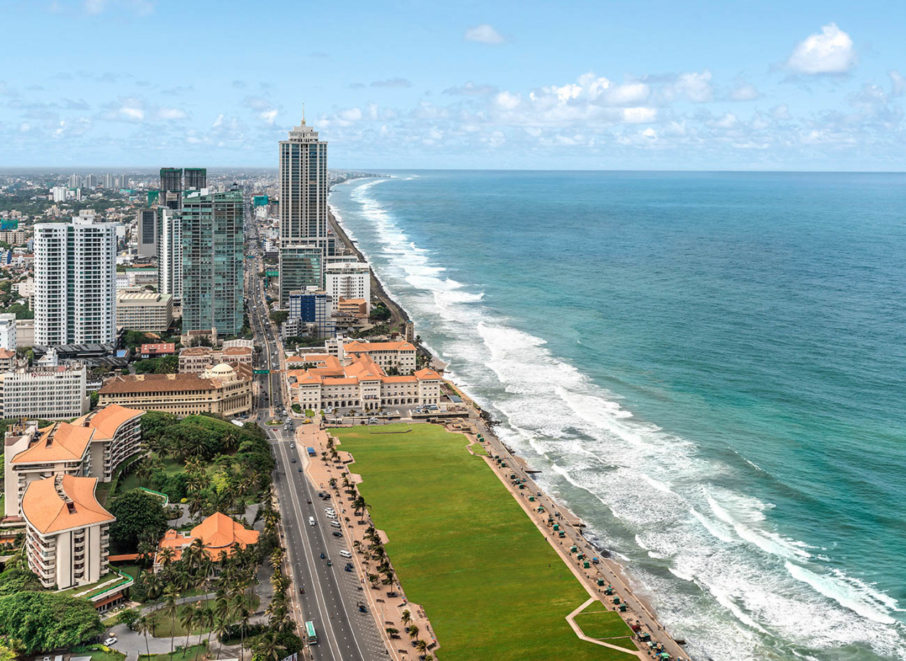

Provide great service for your safe journey
This is the main railway station situated in the heart of Colombo.
The building was built and put into operation in 1908. At present,
the station consists of 10 platforms and caters 0.2 million passengers daily.
It consists of passenger waiting rooms, changing rooms (utility rooms) and cafeterias.
Station has special arrangements for disabled persons. The main seat reservation
counter of the Sri Lanka Railways too is at the Colombo Fort Railway Station.
Fort railway station is a major rail hub in Colombo, Sri Lanka. The station is served by Sri
Lanka Railways, with many inter-city and commutertrains entering each day. Fort Station is the main
rail gateway to central Colombo; it is the terminus of most intercity trains in the country.
The following are a guide to the costs for a ticket from Colombo Fort to Galle. There are 3 classes of train although you’d probably not want to travel in 3rd class as it is extremely crowded and stops at all stations making the journey long. The prices, like the bus, are incredibly cheap. If you want first-class it pays to book as early as possible as there aren’t many seats and they go quickly.
The train journey along the coast is beautiful and takes you through many coastal villages. This railway line also passes through a number of major cities and towns like Kalutara, Beruwala, Aluthgama, Bentota, Balapitiya, and Hikkaduwa and offers views of modern and colonial Sri Lanka from the comfort of your seat.
It’s worth noting that nearly all the trains continue on to Matara which is about 90 minutes along the coast past Galle. If you’re staying on that side of Galle the stations after Galle may be better suited to alight. Just make sure that the train stops.
If you have the time and like the countryside, you must take a trip on the railways from Colombo Fort. Just recently travelled myself. What an experience from Colombo to Galle. Absolutely beautiful scenery. Cost was 2200rupee's 1st.class with meal and drinks. Took aprox 6hrs and loved every minute of it.......You'll certainly enjoy the experience. Cheers!!
|
Colombo is the commercial capital and largest city of Sri Lanka by population. According to the Brookings Institution, Colombo metropolitan area has a population of 5.6 million, and 752,993 in the city proper. It is the financial centre of the island and a tourist destination |
 |